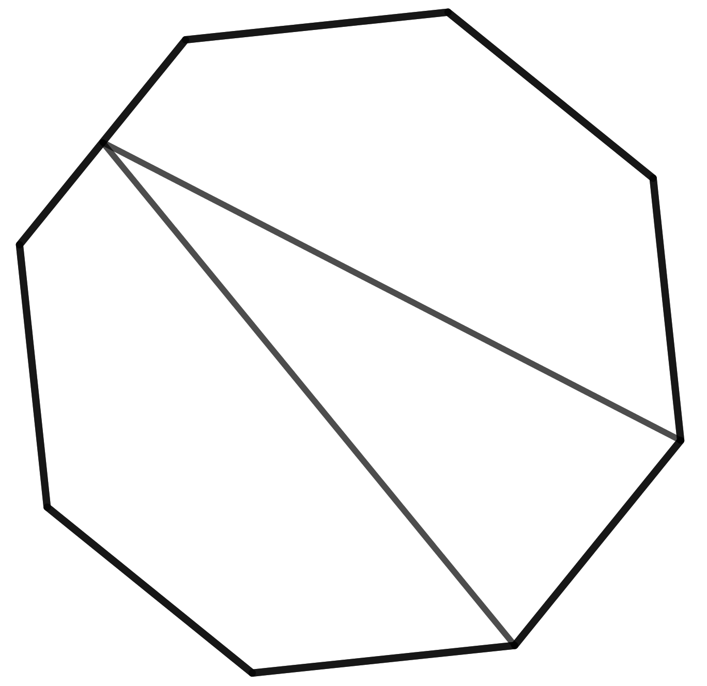
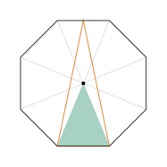
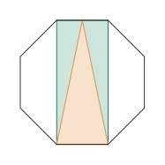
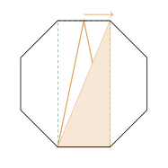

Aufgabe 6.7
In einem regulären Achteck ist eine «Pfeilspitze» eingezeichnet. Welchen Anteil am Flächeninhalt des Achtecks nimmt sie ein?

Anmerkung.
Diese Aufgabe soll unterschiedliche Lösungen provozieren. Mit jeder Lösung ist eine andere Sicht- und Denkweise auf die Figur verbunden. Eine Aufgabe wie geschaffen für reichhaltige Lernsituationen.
- Nutzen Sie die Symmetrie des regelmässigen Achtecks
- Zerlegen Sie in einfache Teilfiguren
So, wie es Lernende lösen können, gibt es mindestens drei Wege. Alle drei kommen ohne Formel aus.
Weg 1: acht Dreiecke

Vom Mittelpunkt aus zerfällt das Achteck in acht gleiche Dreiecke. Die Pfeilspitze hat dieselbe Grundseite wie das Dreieck unten, ist aber doppelt so hoch: Sie reicht bis zur oberen Seite, das Dreieck nur bis zur Mitte. Doppelt so hoch heisst doppelt so gross. Also $2\cdot\frac{1}{8} = \frac{1}{4}$.
Weg 2: ein Rechteck dazwischen

Die obere und die untere Seite bilden zusammen ein Rechteck. Die Pfeilspitze hat dieselbe Grundseite und dieselbe Höhe wie das Rechteck, ist also halb so gross. Und das Rechteck ist halb so gross wie das Achteck. Das zeigen die acht Dreiecke aus Weg 1: Das Rechteck ist so breit wie eine Achteckseite und so hoch wie zwei Dreieckshöhen, hat also den Inhalt von vier der acht Dreiecke. Also $\frac{1}{2}\cdot\frac{1}{2} = \frac{1}{4}$.
Weg 3: die Spitze verschieben

Schiebt man die Spitze auf der oberen Seite entlang, ändert sich der Inhalt nicht: Grundseite und Höhe bleiben gleich. Schiebt man sie bis in die Ecke, ist die Pfeilspitze genau die Hälfte des Rechtecks aus Weg 2, abgeschnitten entlang seiner Diagonale. Das sieht man ohne jede Rechnung, und der Rest geht wie in Weg 2.
Im Video: Etappe 6 · Das Ergänzungsprinzip bei 4:43